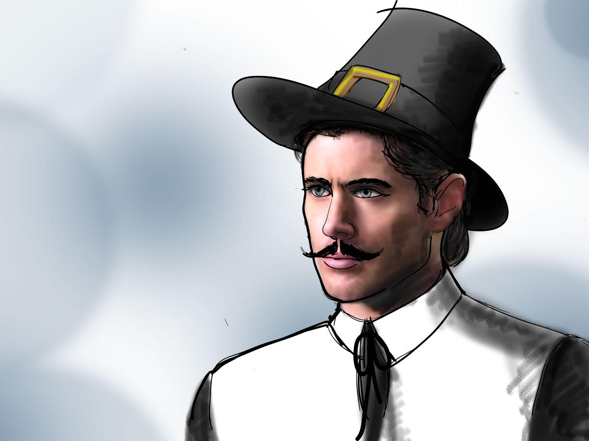
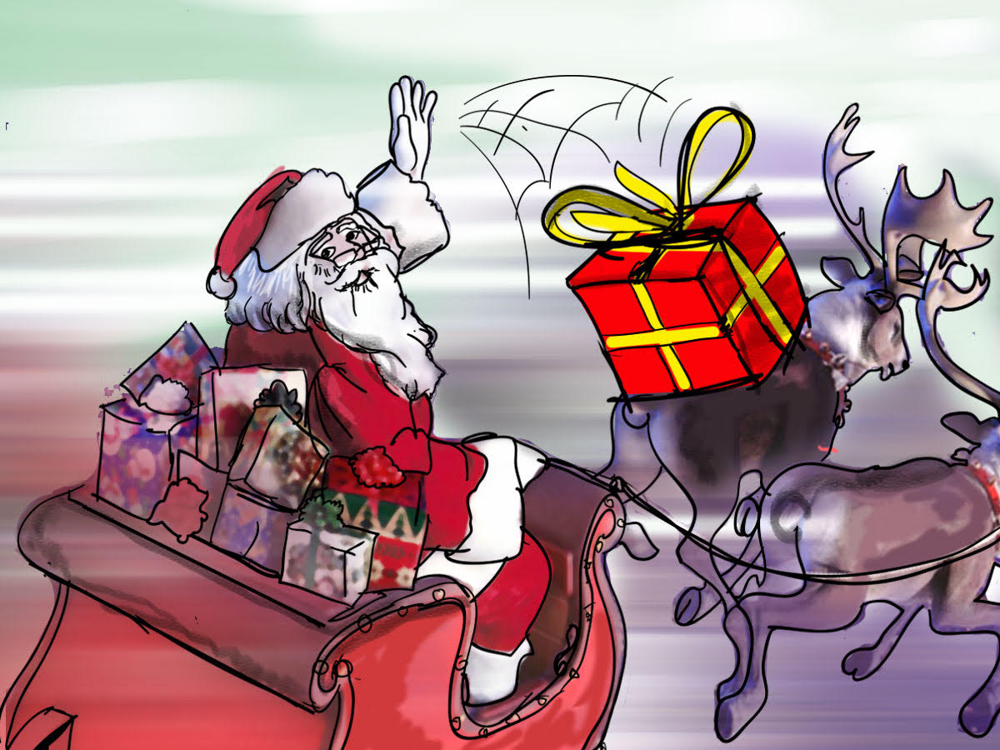
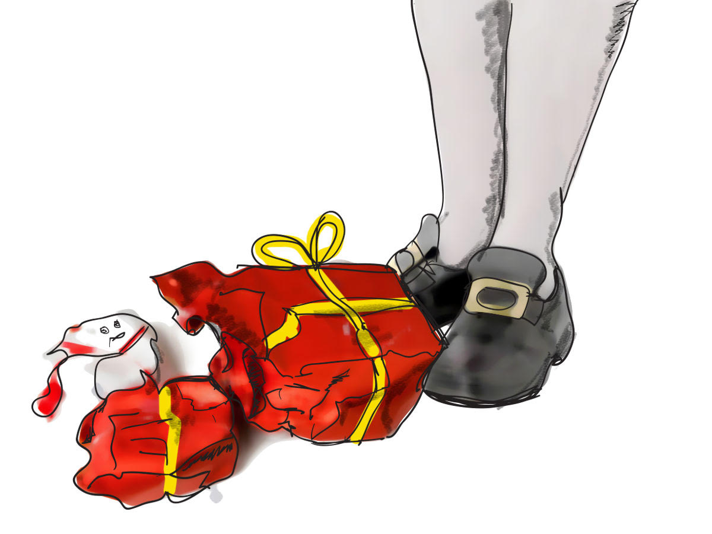
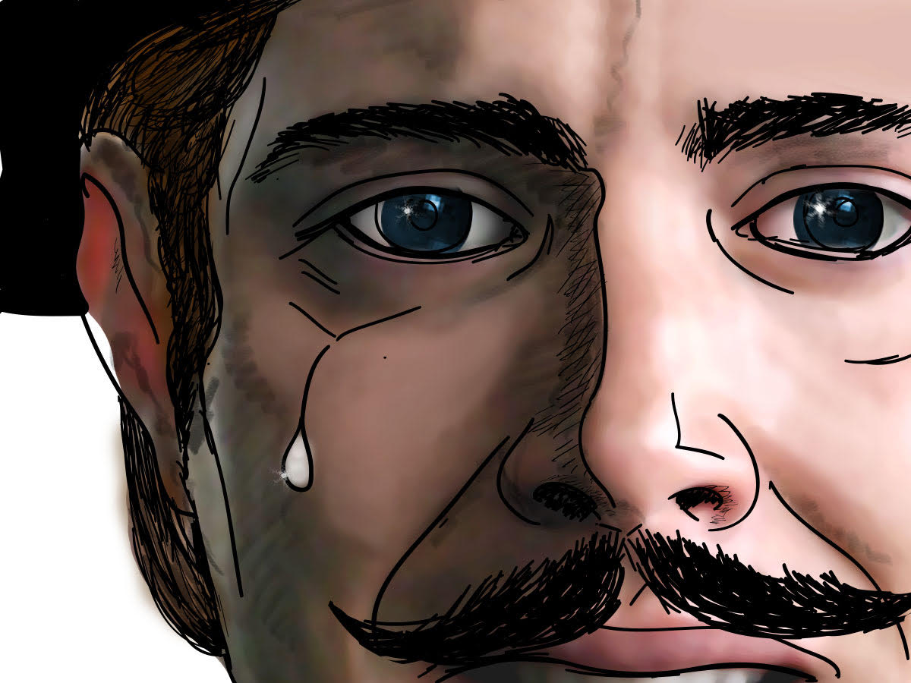
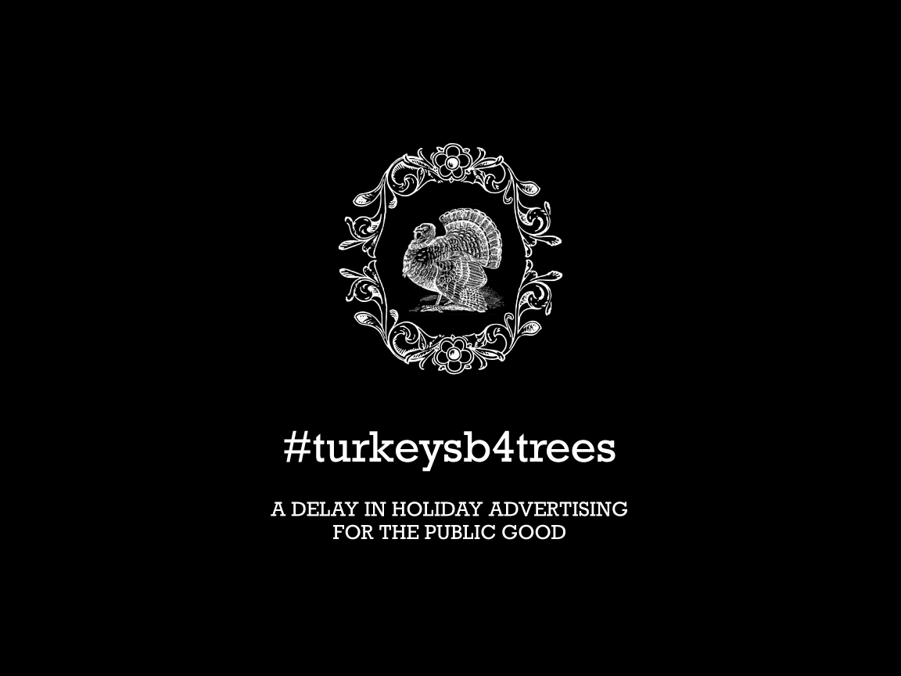

Spec work
#turkeysb4trees
Every year, Christmas marketing comes earlier. It takes away from the joy of the true holiday season, and it intrudes on that most American of holidays: Thanksgiving! One of my fondest dreams is striking back…

The script
SCENE: A radiant autumn day in New England. Every hue of red, yellow, and orange is visible on the leaves that cover the ground – as well as those still on the trees that line a wide path through the woods.
A Pilgrim walks his horse on the right hand side of the path, towards the camera, taking in the beauty of his surroundings.
AVO: Some people have a deep, abiding respect…
The Pilgrim hears a faint noise, and turns to the left. The noise grows louder and is distinguishable as the jingling of bells. The camera blurs.
AVO: …for the most American of holidays.
Camera blurs back in to show a passing sleigh, pulled by reindeer and driven by a fat, white-bearded man in a red suit. He casually lobs two gift-wrapped packages out of the side of the sleigh as it passes by the Pilgrim.
AVO: And some people don’t.
The packages land at the Pilgrim’s feet.
JOLLY FAT MAN (VO): Ho, ho, ho!
The Pilgrim looks up from the packages at his feet to face the camera. The camera zooms in on his right eye, from which a single tear trickles down his cheek.
AVO: People start holiday marketing too early. People can stop it.
Fade to end card.
The boards
These boards reflect a straighter play on the Ad Council’s spot with Iron Eyes Cody; I’m wondering if a stop-motion visual style à la Burl Ives’ Rudolph might not be a better (i.e. more seasonal) fit.




